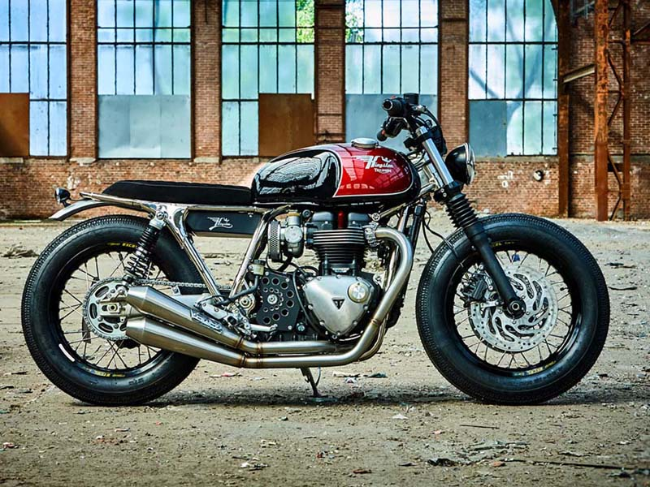
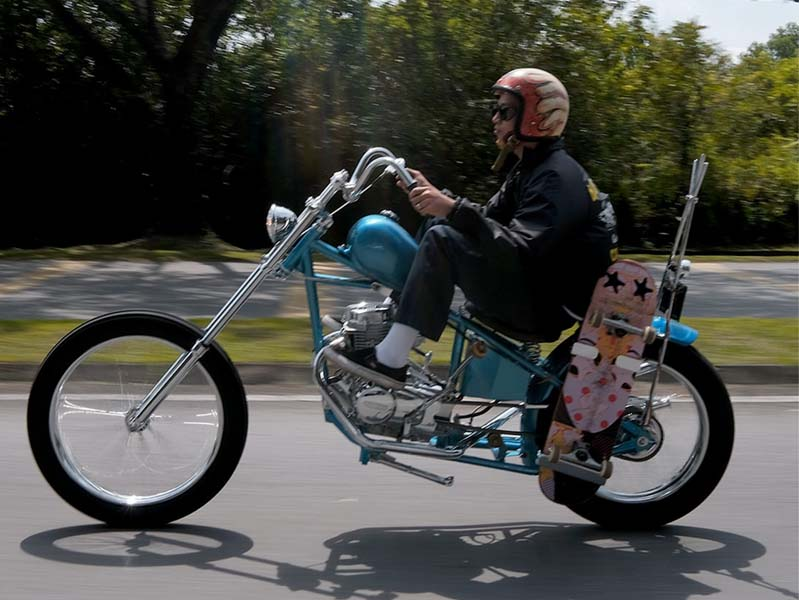
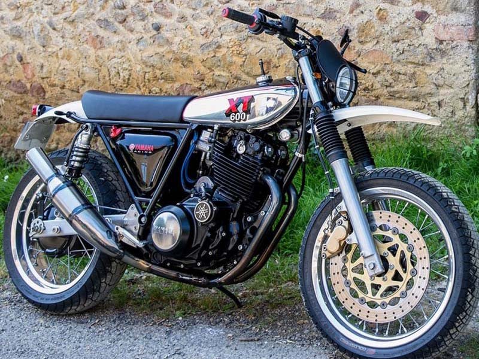

獨樹一格
打造個人專屬的手工車
Brat
有些人認為Brat是Bobber的改裝，又有人稱之日系Bobber，來自日本的高嶺剛，是他針對世上流行的改裝機車，並重新創造出的改車風格，名稱便是他的工作室名稱brat style，是針對歐美適合高大人種，改裝得更讓亞洲人適合的風格，升高手把、腳踏，、後座掏空、削平，再配上越野胎或是釘胎，形成了這種特別的Brat style。
- 
Bobber
Bobber目前分為英系、美系、以及日系。美系Bobber，起源於美國的嬉皮想要追求高速，對當時最流行的機車「哈雷」，所做的輕量化改裝，而英系則是有Cafe racer的前段，有Bobber的後段。目前是三系合一，大致上會配備高把手、前置腳踏、較長的A字車架，讓整體車型較為狂野，適合高大的歐美人騎乘，也因此，才會有Brat的風格誕生。
Cafe Racer
Cafe起源50年代的英國，當時為了輕量化機車而衍生的改裝風格，會叫咖啡的原因，是因為當時咖啡廳，可是酒吧一樣的存在，是因為當時的騎士都會去咖啡廳聽音樂，因此得名。而其特色，就是會降低車身、改裝分離手把、將車身掏空、薄坐墊、單人座，讓他看起來相對小台，但這都是為了輕量化提升速度。
Chopper
Chopper起源於60年代，是美國人對於Bobber的衍生，經濟較為寬裕的機車族，尤其是黑幫，改裝機車是為彰顯自己，因此會將機車改裝得更加浮誇、奢華，長手把、大角度的前叉、短避震，形成極為特別的風格，有人說這是哈雷風格，但哈雷只是廠牌，這種強烈狂野的美式風格，就是Chopper。
- 
Scrambler
Scrambler是歐式復古的象徵，像是著名的歐洲車「凱旋」就是Scrambler的代表。而Scrambler在過去，是用於越野的摩托車，與Tracker外型部分相似，但用作競賽的目的不同，Scrambler是以公路、越野等需求而生，也因此，在外型上，他會採用越野胎，較高的排氣管、引擎下護板等，以及特別的輪框，這些零件放在今天，就是經典的歐系機車。

Tracker
1954年，在美國有了Flat Track的沙地滑胎機車賽，而參加這種機車賽的機車，都因應地形及比賽改裝成了特殊的滑胎車，Tracking就是仿效當時的滑胎車的改裝風格。在車架以及懸吊的調教、加上輪框的選用，還有滑胎、越野胎、開放車把，都能感受到滿滿的復古味。
- 